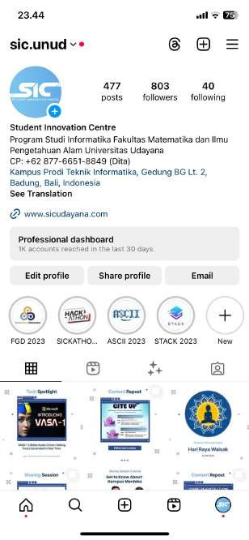
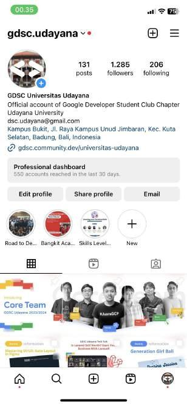
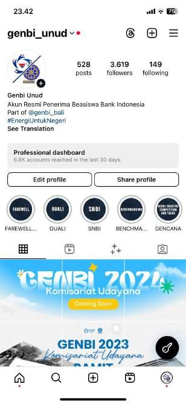
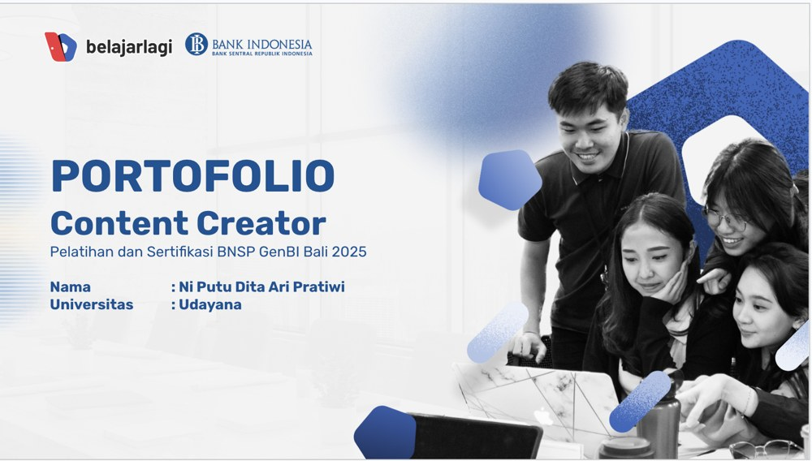

Denpasar, Bali — Informatics Engineering, Udayana University
I design it, build it, and grow it.
Ni Putu Dita Ari Pratiwi, A fresh graduate UI/UX Designer with hands-on experience across design, development, and marketing — leading cross-functional teams and shipping products from design to launch.
// the stack: design-first, dev-capable, growth-minded

Dita Ari · Fresh Graduate
CUMLAUDE
3.90 GPA
3.90 GPA
Where design meets an audience.
I plan, write, and design content for three organizations, and run paid campaigns in a part-time marketing role.

@sic.unud
Student Innovation Center — content & design for 800+ followers.

@gdsc.udayana
Google Developer Student Club Udayana — 1,200+ followers.

@genbi_unud
Bank Indonesia's scholarship chapter — campaigns & events.
Digital Marketing — C.V. Wonderworxs
Running the Meta Ads division part-time since March 2025: building ad creative, setting audience targeting, and managing budget for live campaigns.
It's the numbers side of my design work — the same instinct for what an audience responds to, measured in clicks and conversions instead of usability scores.

Content Creator Certification Portfolio
Built a full content pipeline — niche, research, script, and shotlist — for a 60-second educational video on Bank Indonesia's inflation-control program, using the AIDA framework. The finished portfolio is the evidence behind my BNSP Content Creator certification.